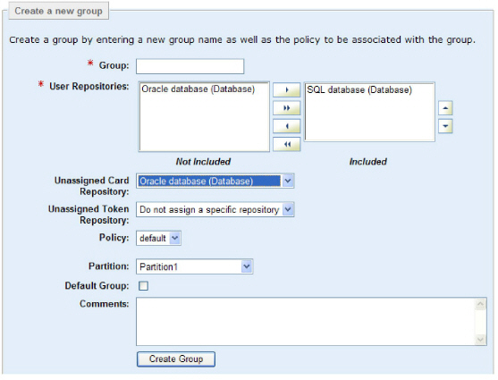

|
IdentityGuard Server 13.0 Administration Guide |
|
IdentityGuard Server 13.0 Administration Guide |
The initial built-in roles provided with Entrust IdentityGuard permit only an administrator with the superuser role to create a new group (see Built-in roles). Any administrator with a role that includes the groupCreate and repositoryList permissions and the All groups option in their role can accomplish this, too. (The administrator needs access to all groups, because a new group is not yet in the administrator's group list.)
Consider the following guidelines when creating a new group:
● Each group name must be unique.
● Assign each group to at least one specific repository. The repository can be a database or an LDAP directory or searchbase. If you do not assign a repository to the group, the group uses the default repository. (If there is only one repository, then the Administration interface does not provide a choice of repositories.)
Unlike database repositories, LDAP repositories require that user entries exist in them before you can add Entrust IdentityGuard user’s information to them.
● Assign a repository to store unassigned tokens for the group. This does not have to be the same repository as for the users or the preproduced cards.
● Assign a repository to store preproduced cards for the group. This does not have to be the same repository as for the users or the unassigned tokens.
● If you use grid authentication, you need to associate users and cards with the same group in order to be able to assign them.
● If you use token authentication, you need to associate users and tokens with the same group in order to be able to assign them.
● Assign each group one policy. If one is not assigned, the group gets the default policy. (Configuring policies).
You must configure the repositories before you can assign them to groups. (See Repository overview.) You can store your Entrust IdentityGuard user data across more than one repository, and the repositories can be of different types (LDAP directory, searchbase, and database). This allows you complete flexibility in how you organize data. For example, you could have normal users of a group in an LDAP repository and all administrators of that group in a database repository. (See also JDBC Database Settings or LDAP Directory Server Settings.)
1. Log in to the Entrust IdentityGuard Administration interface as the administrator.
 On the
Windows computer where Entrust IdentityGuard is installed
On the
Windows computer where Entrust IdentityGuard is installed
2. Click Groups on the home page.
3. Click the Create Group tab.
4. Type a name in the Group field.
5. If you used the Properties Editor to configure Entrust IdentityGuard to store user information in more than one repository, the Repositories option is available. It lists the names and types (database or directory) of each repository. The default repository (on the Repository Settings pane of the Properties Editor) appears in the Included list.
To add another repository, select a repository in the Not Included list and click the right-arrow to move it to the Included list.

6. If you have multiple user repositories, you can change the order that repositories appear. (See Set repository order for an explanation of why this may be important.) To change the order of repositories, select a repository and change its position using either the up-arrow or down-arrow.
7. (Optional) Select a repository in which to store unassigned cards. All configured databases and file-based repositories appear in the list. The default is Do not assign a specific repository.
8. (Optional) Select a repository in which to store unassigned tokens. All configured databases and file-based repositories appear in the list. The default is Do not assign a specific repository.
Note: You can
use the same database to store unassigned tokens and cards, or you can
store them in separate databases. You can also store tokens in a file-based
repository, and cards in a database, (or cards in the file-based repository,
and tokens in the database).
You cannot store unassigned cards or tokens in more than one file-based
repository.
9. (Optional) Select a policy from the Policy list. If you do not select a policy, the default policy is applied. (You can select just one policy.)
10. (Optional) Select a partition from the Partition list. The default setting is Do not assign a partition.
11. Select Default Group if you want this new group to be the default in any case where a later action does not specify a group. You can have just one default group.
The built-in group named default continues to exist but is no longer used as the default in cases where a group is not specified.
12. (Optional) Add comments describing the purpose or detailed characteristics of the group.
13. Click Create Group.
The View Group page appears and lists all group settings. Modify the settings to meet your requirements. (See Modify a group.)